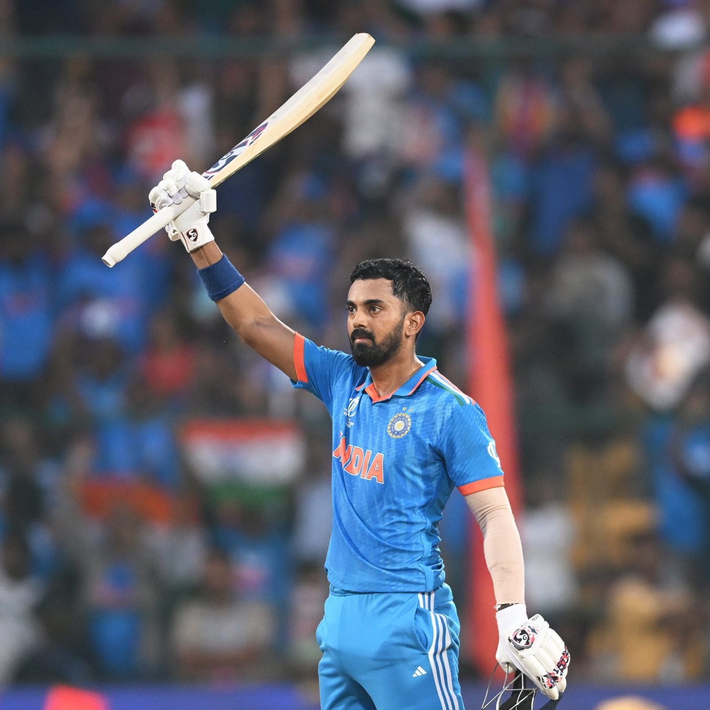
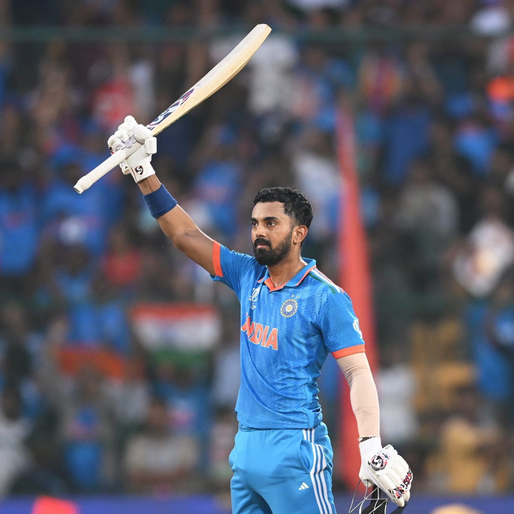
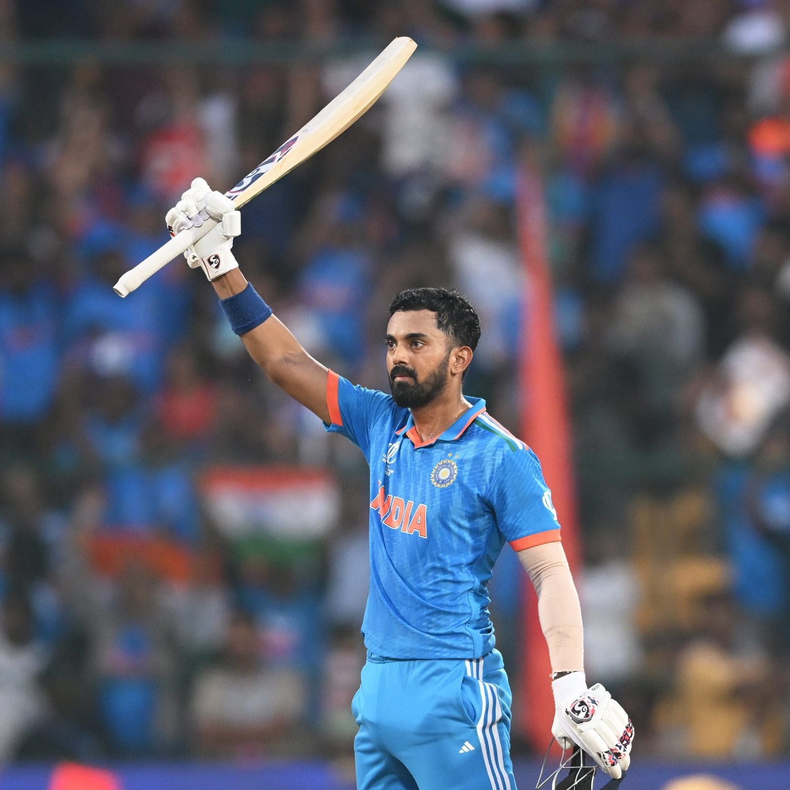

In the last group match of the tournament, the whole league stage has been a breeze for them. 9 games, 9 wins, 9 dominant performances. The day is Diwali day but these boys in blue have been giving the nation presents since the World Cup started.
KL Rahul, the man of many gears, also finds overdrive
Ton-Up Shreyas Iyer and KL Rahul Help India Secure Victory by 160 Runs.
Venue: M. Chinnaswamy Stadium, Bengalore

India won the toss and opt to bat.
Firstly, both the Indian openers Rohit (61) and Gill (51) fired on NED bowlers.
But NED bowlers managed to get the both the openers.
Virat scored (51) and went early.
KL Rahul (102) and Shreyas Iyer (128*) scored 100's each.
Rahul scored the fastest 100 for India in World Cup History within 62 balls.
India scored the mamooth total.
In the chase as the small side NED played well against Indian bowling line-up.
Even ENG, SA, AUS, PAK didn't even scored 200 against India but NED did.
Finest memory from the match is Virat gets the wicket of Ned Captain Edwards and also Rohit finished the match by getting a wicket in his own Bowling.
With lots of Confident India is going to face New Zealand in the Semi-Final.
 
